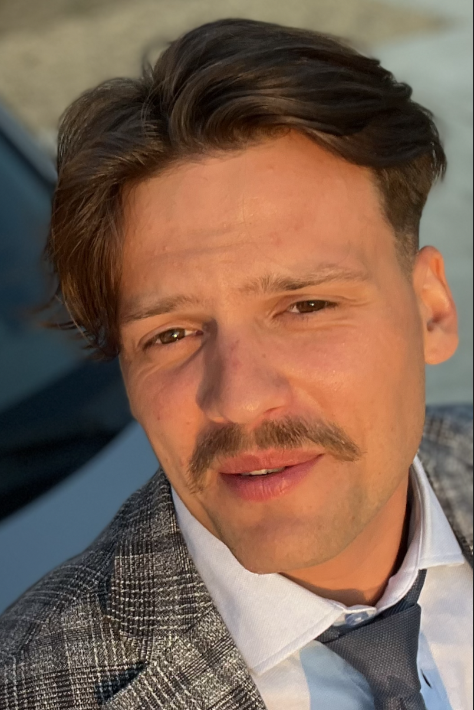

Jakub Panczyk

Summary
I am self taught beginner programmer and Master of Science in Civil Engineering
Education [in polish]
- wyższe II stopnia (magister), 2018-2020 (KBI) Budownictwo na Uniwersytecie Technologiczno-Przyrodniczym w Bydgoszczy
- wyższe I stopnia (inżynier), 2014-2018 (KBI) Budownictwo na Uniwersytecie Technologiczno-Przyrodniczym w Bydgoszczy
- Średnie, 2011-2014, IX Liceum Ogólnokształcące im. Zofii Nałkowskiej w Bydgoszczy, o profilu z rozszerzonym programem j. angielskiego
Work experience [in polish]
- 2019-obecnie P.W. Lech sp. z o.o.: Inżynier Budowy
- 2019 Rimb sp. z o.o.: Obsługa budowy
- 2016, 2017 P.W. Lech: Praktyka na budowie
- Barista w kawiarni Breadhouse Cafe
- Barman i kelner w pubie Amsterdam
- Audytor na inwentaryzacjach w Inwertory Solution
Skills [in polish]
- basic of html
- Znajomość obsługi programów: AutoCad, Scia Engineer, Robot Structural Analysis, Advanced Steel, BiK, Revit, Soldis, Pakiet Office
- j. angielski poziom B2
- prawo jazdy kat. B od 2013r.
Others